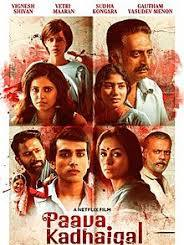

Paavai (2006) is a Tamil romantic drama directed by M. K. Sura, starring Srikanth and Meera Jasmine.
The film centers around a love story set against the backdrop of rural life, where the protagonists face societal pressures and familial challenges.
Srikanth plays the role of a young man from a traditional family who falls in love with Meera Jasmine's character, leading to various conflicts and resolutions.
The movie highlights themes of love, sacrifice, and perseverance amidst social obstacles.
Paavai was noted for its heartfelt narrative and the performances of its lead actors.